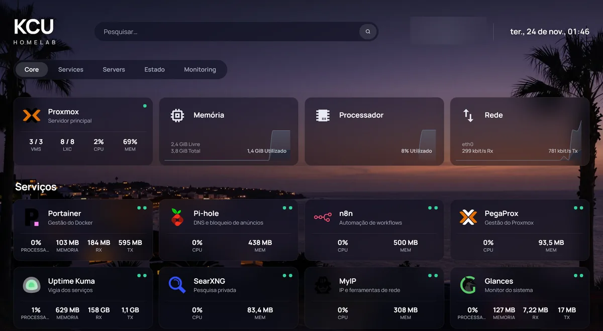
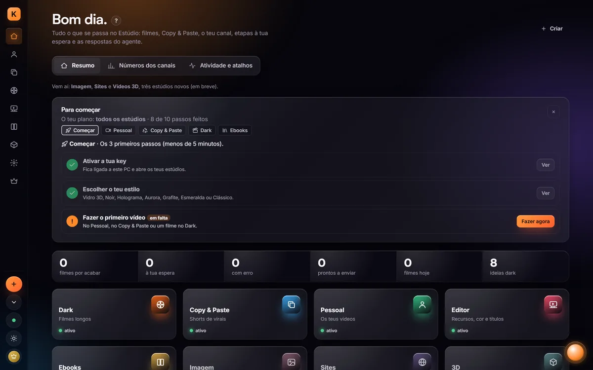
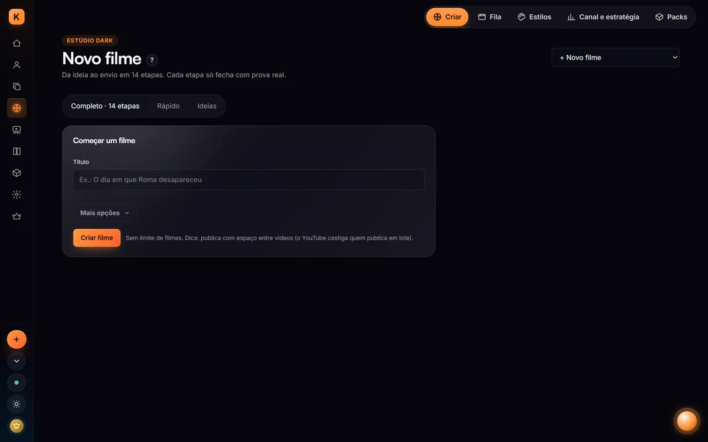
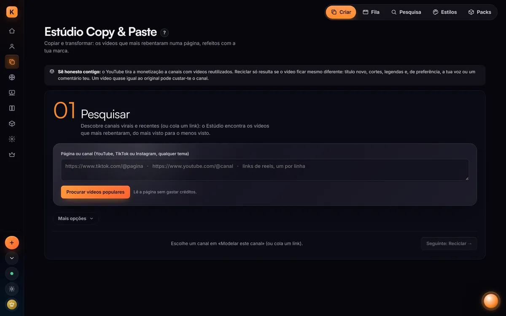
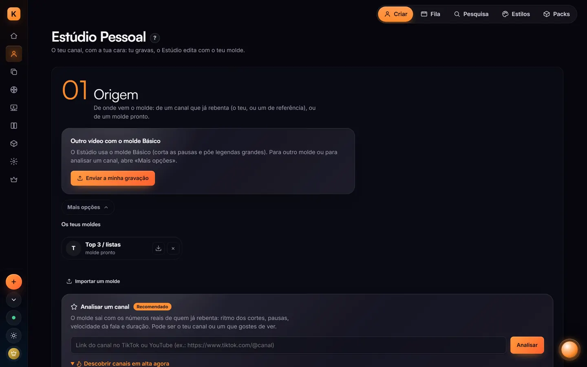
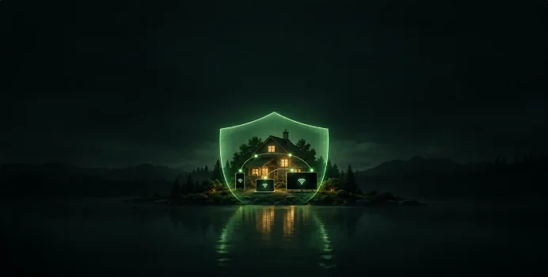
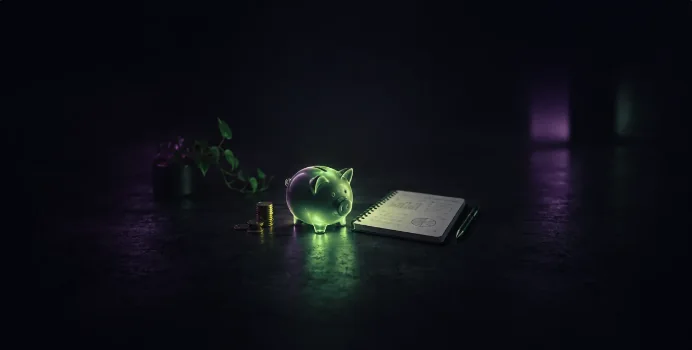

KCU Services
Segurança, rede e apps que usamos em casa.
Aqui ficam as ferramentas que construímos para o nosso próprio dia a dia, e a forma como montámos tudo. Fazemos isto à frente de toda a gente, em vídeos sem cortes: tu dizes o que falta e nós melhoramos.
Código aberto (grátis para uso pessoal)
Pega, aprende e adapta ao teu. São as mesmas ferramentas que usamos todos os dias, limpas de tudo o que é nosso.
-
kcu-window
Abre uma app do teu PC Windows no browser (telemóvel ou outro PC), sem ambiente de trabalho remoto. Mostra só a janela dessa app.
Ver no GitHub -
kcu-stack
O nosso setup completo: máquinas, Proxmox, IA e as apps que usamos todos os dias, com as definições que funcionam e o porquê de cada escolha.
Ver no GitHub -
kcu-automaticos
Os scripts que mantêm os nossos PCs Windows a funcionar sozinhos: limpar a RAM, desligar à noite, manutenção e vigia de serviços.
Ver no GitHub -
kcu-ia-local
IA a correr em casa: transcrição compatível com a API da OpenAI, Qwen em português de Portugal no Ollama e um pipeline imagem → vídeo no ComfyUI.
Ver no GitHub

Em destaque
KCU Estúdio
O nosso estúdio de vídeo com IA, a correr no nosso próprio PC. Filmes longos, shorts, o teu canal e ebooks: da ideia ao vídeo pronto a publicar. É só uma montra: o código não é público.

-

🌑 Dark
Filmes longos, da ideia ao envio em 14 etapas, cada uma fechada com prova real.
-

🔁 Copy & Paste
Encontra os vídeos que mais rebentaram e ajuda-te a refazê-los com a tua marca.
-

🙋 Pessoal
Tu gravas e o Estúdio edita com o teu molde: corta as pausas, legenda e segue o ritmo.
Produtos
Estes não estão no GitHub. Estão na loja KCU Services na Whop.
-

🛡️ Pi-hole anti-apostas
Fecha a porta às apostas e à pornografia na casa toda.
Ver na loja: Pi-hole anti-apostas -

🔒 Playbook de Proteção
Blinda o teu servidor sem expor uma única porta.
Ver na loja: Playbook de Proteção -

✅ Checklist de Segurança do Servidor
Os 10 passos, em lista de ação.
Ver na loja: Checklist de Segurança do Servidor -

🐷 PIGGY + LifeOS
As tuas finanças e as tuas notas, sem as entregar a ninguém.
Ver na loja: PIGGY + LifeOS -

🤝 Assistência KCU
Não sabes por onde começar? Começamos contigo.
Ver na loja: Assistência KCU
Comunidade
As tuas ideias decidem o que melhora a seguir. As que entram ficam no registo de alterações com o teu nome.
-
Discussions
Ideias, perguntas e o teu setup, no GitHub. Se algo não funciona, abre uma issue no repositório da ferramenta.
Entrar na conversa -
Instagram
Novidades, bastidores e avisos quando algo novo sai.
@kcu.services -
Loja
Todos os produtos KCU Services num só sítio, na Whop.
Abrir a loja